Recursos Compartidos
Lo que haremos a continuación sera crear una carpeta compartiada y que lo pueda recibir estando dentro de la red
Paso a Paso
Paso 1: Primero crearemos un carpeta en nuestro escritorio, le daremos a click dereco iremos a nuevo y le daremos crear carpeta
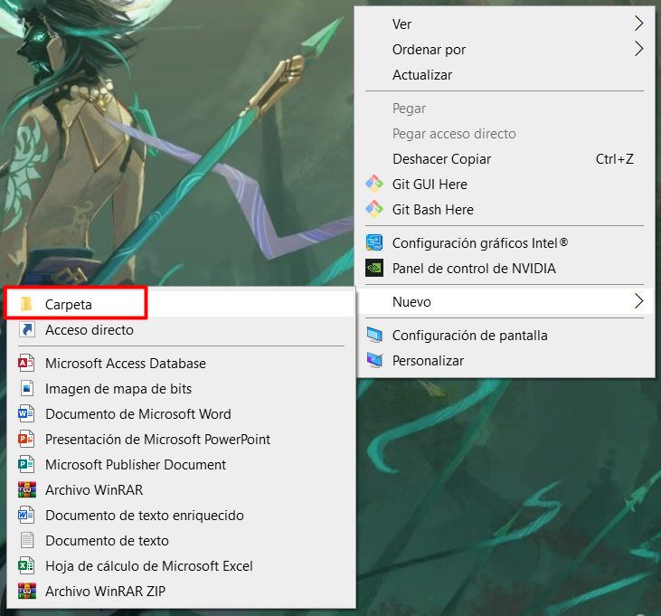
Una vez creado dentro de la carpeta podemos crear un archivo txt, y iremos a propietario
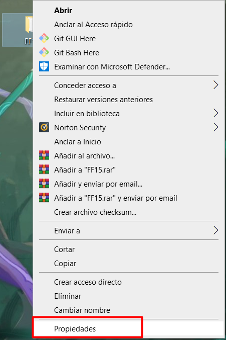
Nos habrira una ventana flotante donde nos aparecera un par de bloques con opciones y le tendremos que dar a compartir
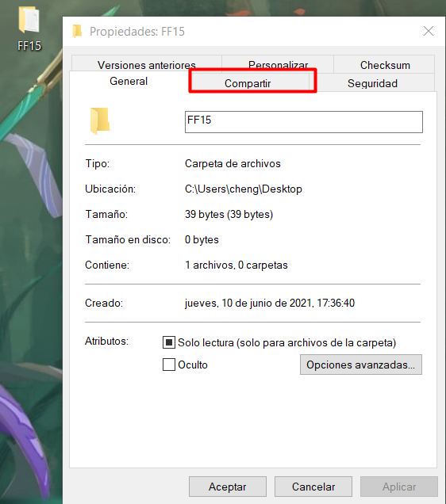
Ahora le daremos a permisos
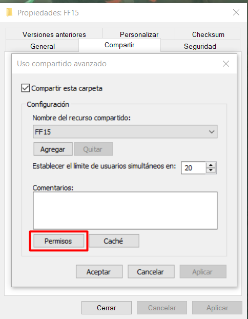
Le daremos permisos a los usuarios compartidos, que se pueda editar y modificar, le damos a aplicar y aceptar
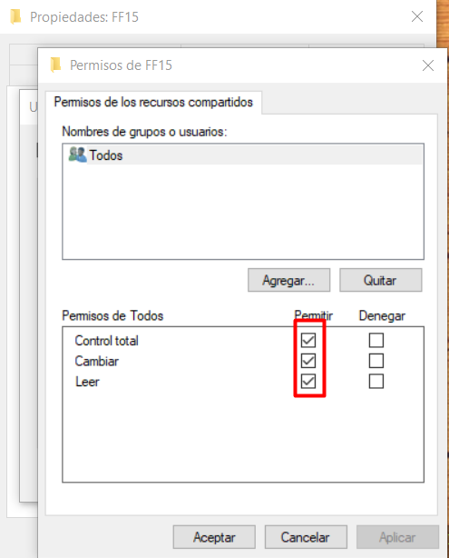
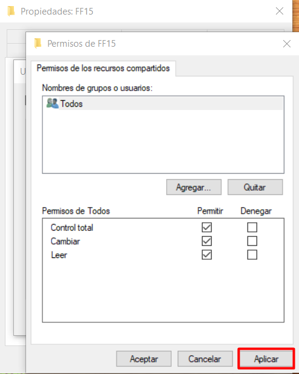
Luego tendremos que ir a una apartado de la red y le daremos configuración compartida avanzado
y lo que haremos es activar para que sea visual en la red y tambien quitaremos las restricciones de las contraseñas
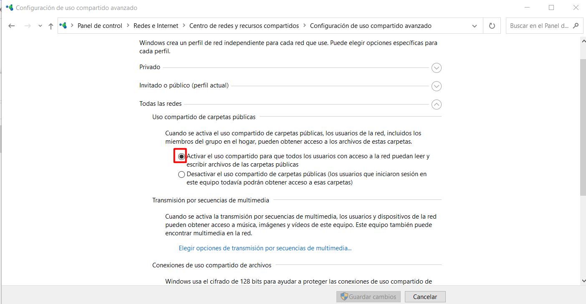
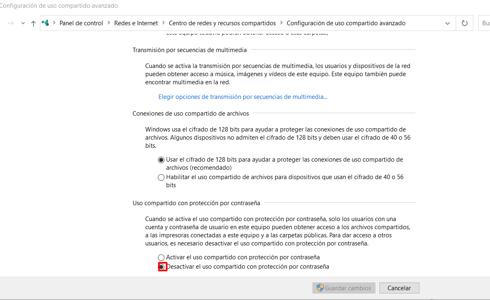
Impresora
Tenemos que hacer que la impresora se conecte a la red atravez de via Wifi, USB,
Ethernet, Firewall y que se pueda imprimir. Primero cogemos la impresora
y lo enchufamos a la corriente y cogemos otro cable y lo enchufamos al USB del portatil
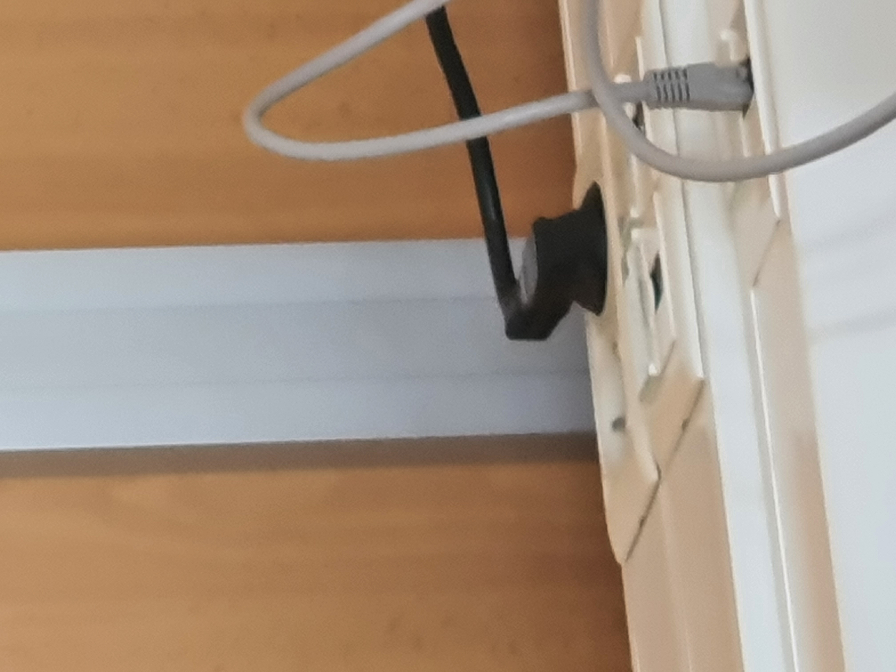
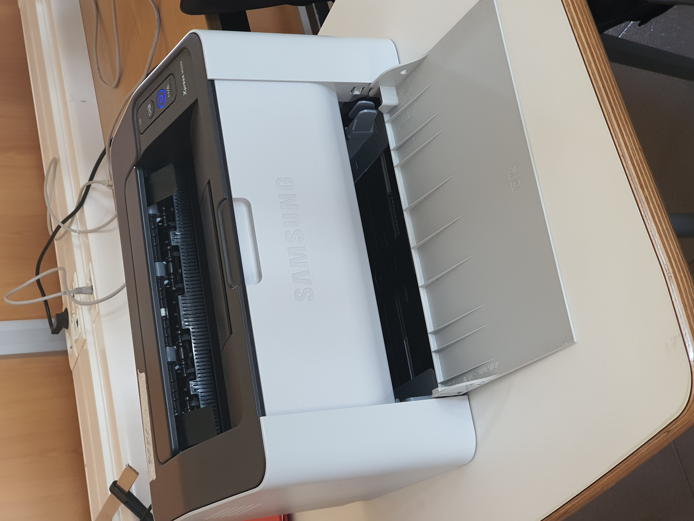
Paso 1
Primero cogemos la impresora y lo enchufamos a la corriente y cogemos otro cable y lo enchufamos al USB del portatil
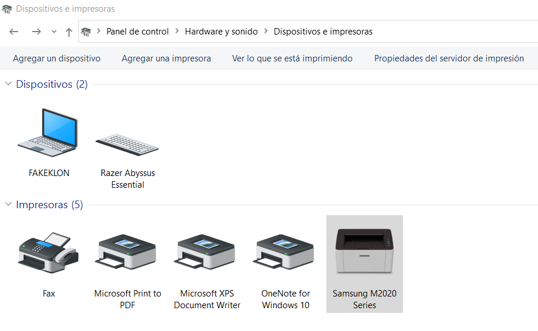
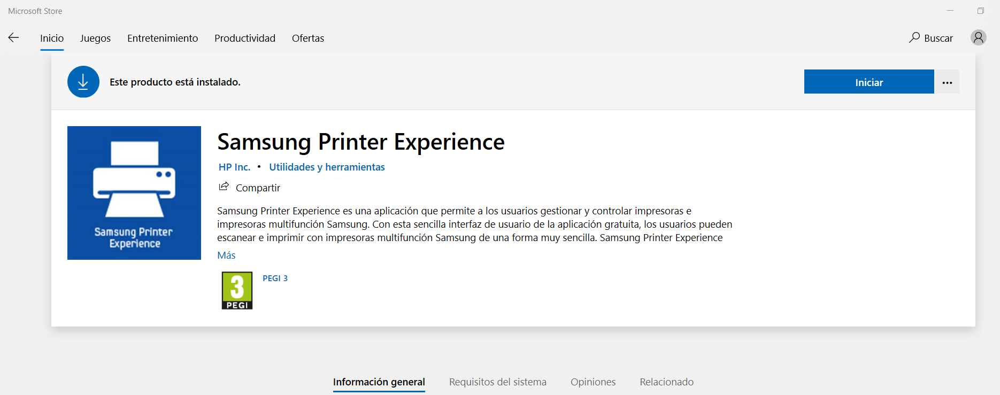
Paso 2
Haremos la primera prueba imprimendo una pagina desde alguan web con el comando [Control + P]
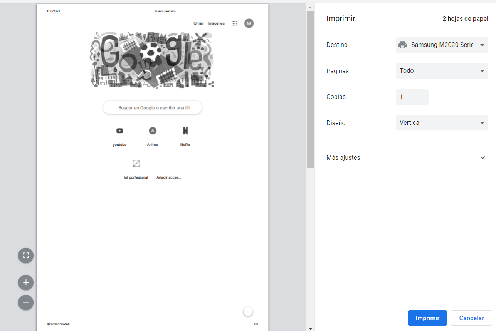
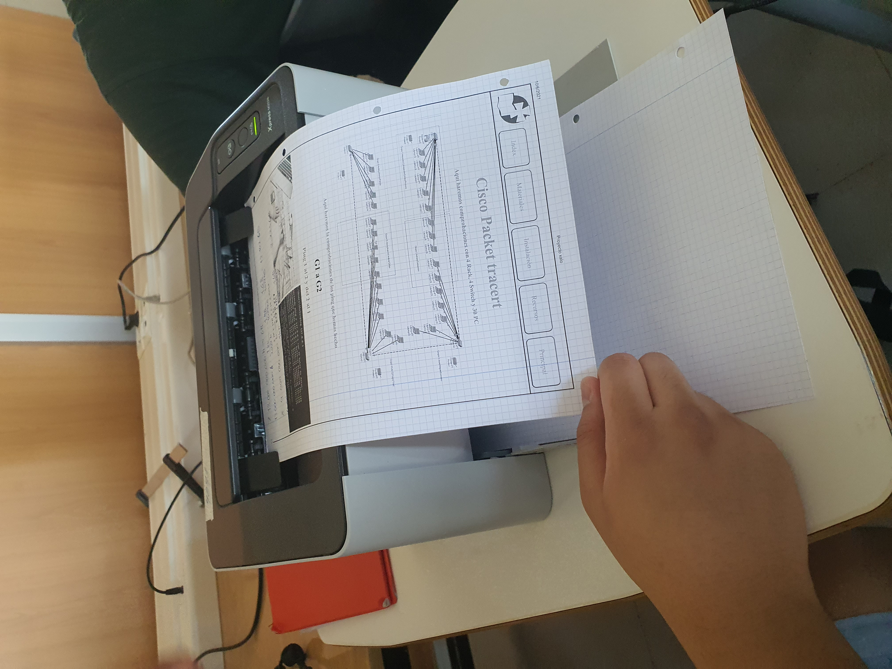
Lo siguiente que haremos es que con la carpeta compartiada pueda imprimir a travez de la red y
el primer paso que haremos sera entrar en el panel control y entrar en la propiedades de la impresora
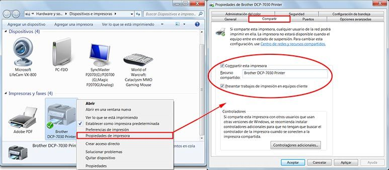
Lo que haremos es que un compañero abra la carpeta compartida para que pueda imprimir a travez de la red
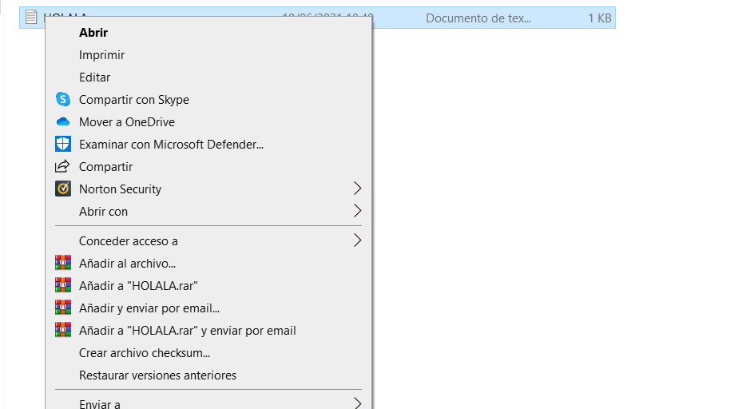
El documento se pondria en cola para descargar
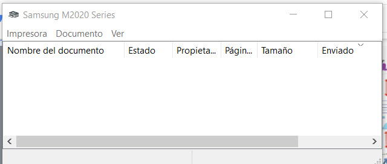